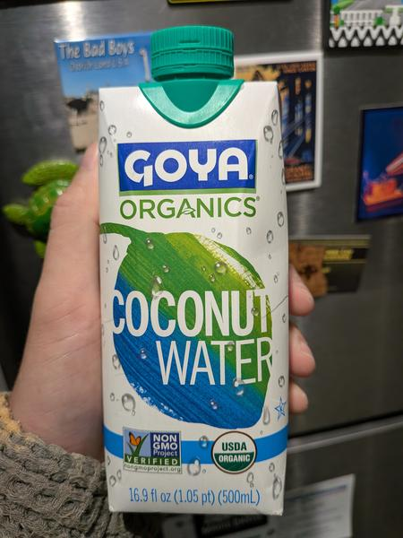

September 2026 · 16.9 fl oz (500 mL) · Still · Pasteurized · Added Sugar · USDA Organic
Ranked 20th of 35 coconut waters I have scored · below Goya Original (4.7) · above Maui & Sons (4.6). See the full ranking.
A company like Goya seems to not be able to help itself from adding sugar everywhere possible, and despite this water being organic, it too has added sugar. Non-GMO, so I guess you can rest easy knowing that the sugarcane is not genetically modified (there is no such thing as a GMO coconut).
Pretty rough around the edges, tastes much more like the color gray than the color green. Acrid despite the added sugar. Despite all that it's still better than a lot of waters on the market. I'm just a Goya hater. Still wouldn't recommend this to someone I like.
See my other 2 Goya reviews: all Goya coconut water.
These coconuts are grown in habitats threatened by palm oil deforestation. If you find this site useful, consider donating to the Rainforest Action Network.